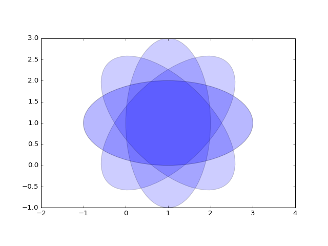

Data Access¶
The PyDataSource package provides access to LCLS event data by wrapping the psana “Detector” interface.
Use run and exp keywords to access your data.
[1]: a = [1,1]
[2]: b = ['a','b']
b
next¶
ploting
from pylab import *
from matplotlib.patches import Ellipse
delta = 45.0 # degrees
angles = arange(0, 360+delta, delta)
ells = [Ellipse((1, 1), 4, 2, a) for a in angles]
a = subplot(111, aspect='equal')
for e in ells:
e.set_clip_box(a.bbox)
e.set_alpha(0.1)
a.add_artist(e)
xlim(-2, 4)
ylim(-1, 3)
show()
(Source code, png, hires.png, pdf)
{kind=link}
{kind=link}

In [1]: import PyDataSource
In [2]: ds = PyDataSource.DataSource(exp='xpptut15',run=54)
In[3]: ds.configData
< ConfigData: exp=mfx12616:run=45:smd >
*Detectors in group 0 are "BLD" data recorded at 120 Hz on event code 40
*Detectors listed as Controls are controls devices with unknown event code (but likely 40).
Alias Group Rate Code Pol. Delay [s] Width [s] Source
------------------------------------------------------------------------------------------------------------------------
Acqiris 1 198 Pos 0.000147630 0.000010000 DetInfo(MfxEndstation.0:Acqiris.0)
BeamMonitor 1 198 DetInfo(MfxEndstation.0:Wave8.0)
EBeam 1 BldInfo(EBeam)
FEEGasDetEnergy 1 BldInfo(FEEGasDetEnergy)
FEE_Spec 1 BldInfo(FEE-SPEC0)
PhaseCavity 1 BldInfo(PhaseCavity)
Rayonix 1 198 Neg 0.002998336 0.000500000 DetInfo(MfxEndstation.0:Rayonix.0)
< ConfigData: exp=mfx12616:run=45:smd >